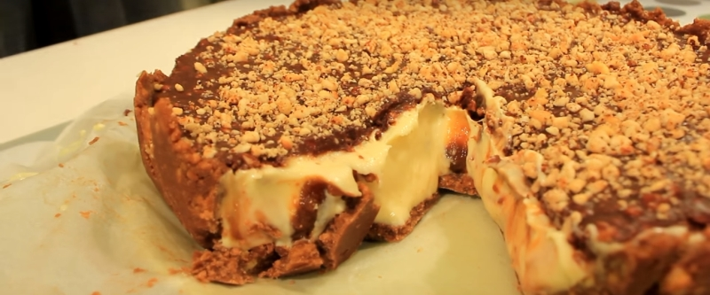

приготовление:
-
Сварить заранее банку сгущенки (три часа на маленьком огне полностью! покрытую водой). 100 гр. сливочного масла оставить настоле до комнатной температуры. Для коржа: перемолоть в бледере 300 гр. простого печенья, перемешать с мягким сливочным маслом и 5 ст.л. нутеллы. Вымесить, застелить форму пергаментом, распределить массу по форме, залезая на края, создавая борты. Отправить в морозилку.
-
Для крема: 200 гр. сахара высыпать в кастрюльку, добавить 300 мл. молока, ванилин и 200 масла, довести ДО кинения. Миксером ввести в получившуюся смесь 400 гр. сухого молока. Достать из морозилки корж, вылить на него половину крема, на слой крема ложкой в отдельные места положить кусочки вареной сгущенки, залить оставшейся частью крема. Отправить в холодильник.
-
Для глазури: растопить 100 гр. горького шоколада, 100 гр. белого шоколада и 70 мл. молока. Если есть желание сюда же отправить 100 гр. дробленого фундука или им посыпать глазурь. Полить глазурью торт и оставить на ночь в холодильнике застывать.